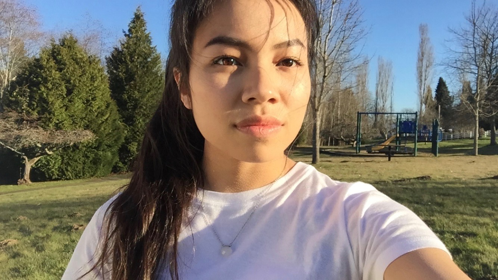
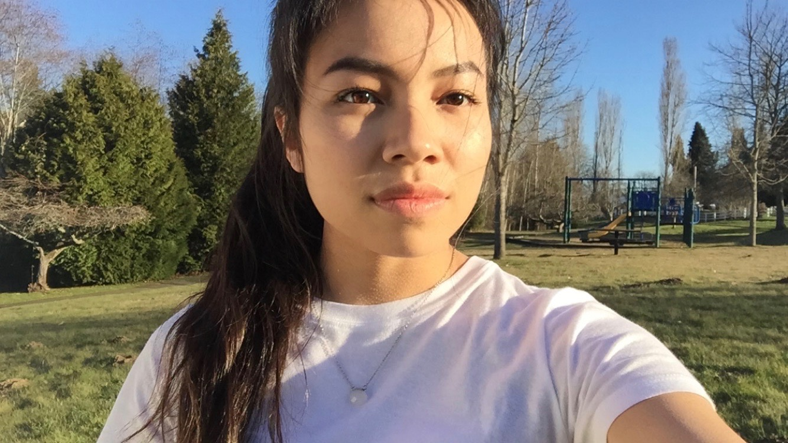

Alexa's WEB120 Portal
Welcome!
 

My name is Alexa Agustiano and I am taking this class and a few others as prerequisite for UW Bothell's Interactive Media Design Program which I will be applying to this fall. In WEB110 I was able to create a website for my parents' small business and I'm eager to continue growing my portfolio as a web developer.